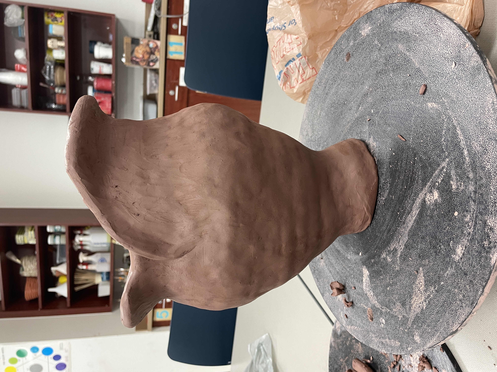
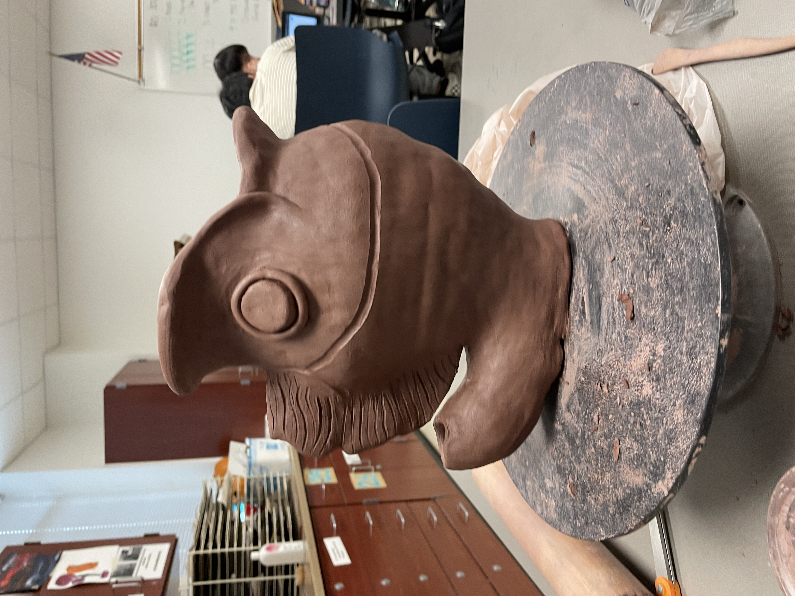
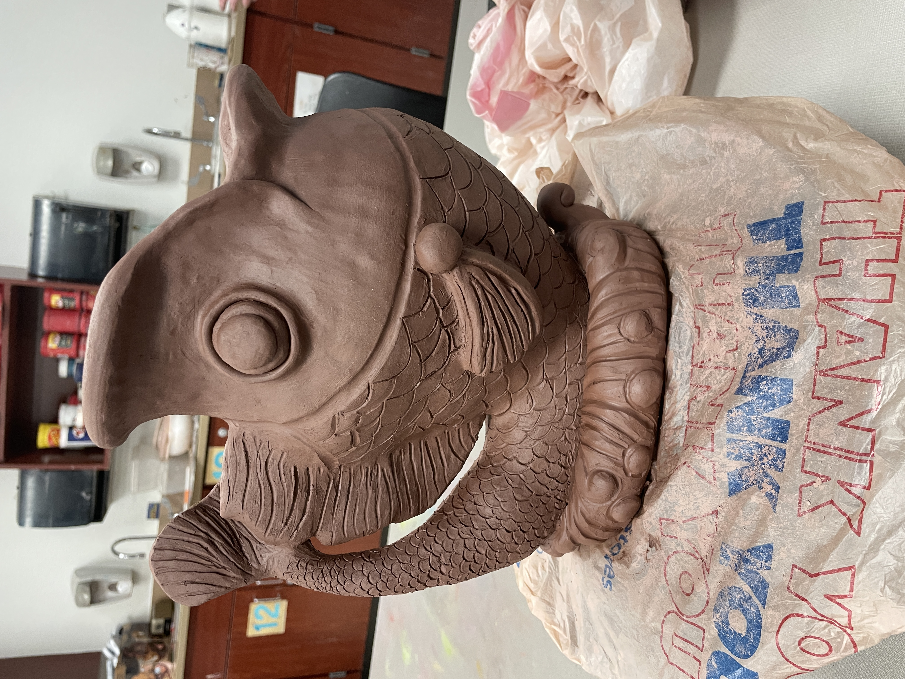

This is a clay piece I made when I was in highschool for ceramics. My teacher gave us the assignment of making a vase and we could basically choose any style we wanted so I decided to try and bend the rules a bit to make a gluggle jug. A gluggle jug is basically just a water pitcher that makes silly water noises when you pour water from it but it doesn’t matter anyways because it ended up being a vase! I failed to account for the fact that clay is very heavy and the fish ended up becoming much larger than I meant for it to be. But, hey, it still turned out to be a pretty decent vase!
I decided to use coils to make this piece and worked on getting the silhouette of the body minus the tail. Because I was using coils, I ended up building the piece in increments which contributed to the questionable proportions of the body. The bottom started off small and then we got to the gaping wide mouth which is larger than the actual head when I finally took a step back and realized how strange it looked. It was also kind of incredible how it managed to balance on such a small base with such a clearly leaning mass. I would definitely recommend drawing out what size you want your vase to be because it can be very easy to get carried away when using coils!

After the main body figure was established, I cut a hole in the side where the tail would go and started coiling out a branch from there. I only did a little stub jutting outwards and made the rest of the tail separately to attach. I just found that this way would be easier to keep the scale in check since I can get tunnel vision pretty easily.

After this, I focused more on adding the details such as fins, eyes, scales, etc. There’s nothing much of note about the body parts but I did experiment with a variety of tools to get consistent sized scales and ended up using a spoon! I did make the scales taper down in size as it got closer to the tail so I did those parts with the loop tool or by hand. And of course, I touched all of the scales up manually as well. I needed each scale to be the proper depth so it wouldn’t just get covered by the glaze and disappear.
I also added a water-like base at the bottom to make it look more natural but the base honestly doesn’t look like water at all and was done in a bit of a hurry after failing once already. I just rolled a slab in a cylinder shape, wrapped it around the base like a scarf, and started carving away. I would recommend doing more research in how to make beautiful waves from clay because I didn’t and subsequently struggled a lot with this part.

Overall, I am proud of this. I think this is probably my best clay piece and I really enjoyed making it. I also got a bunch of compliments on it while I was making it from both classmates and random strangers! I think there are definitely parts I could’ve done better such as making the tail portion not look as lumpy and making the waves look more natural but the fish itself is pretty impressive, if only in size. I do like the fish vase a lot though, and I would consider remaking it in the future to see how much I’ve improved.